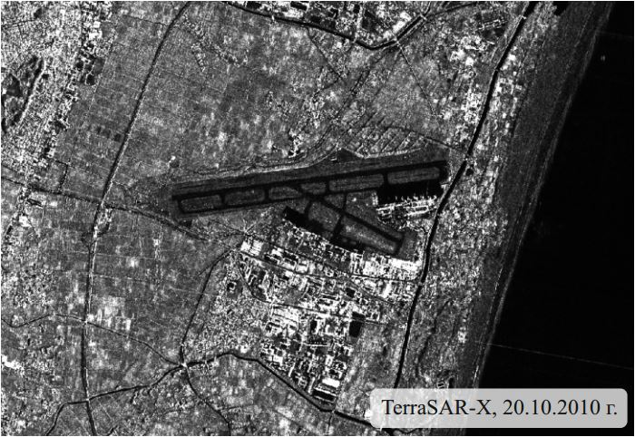
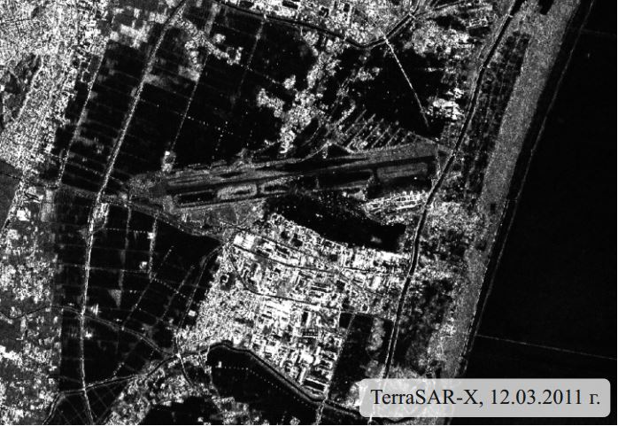

11 марта 2011 г. у восточного побережья острова Хонсю произошло землетрясение магнитудой 9. Эпицентр
землетрясения определён в точке, расположенной в Тихом океане на удалении 70 км от побережья, гипоцентр
находился на глубине 32 км. Землетрясение вызвало сильное цунами, которое привело к значительным
разрушениям на северных островах Японского архипелага. Для достижения побережья волнам цунами
потребовалось от 10 до 30 минут. Ближайший крупный город – Сендай – расположен в 130 км от эпицентра
землетрясения. В результате цунами были затоплены территории города и окрестностей на расстоянии 10 км
от побережья.
11 марта 2011 г. у восточного побережья острова Хонсю произошло землетрясение магнитудой 9. Эпицентр
землетрясения определён в точке, расположенной в Тихом океане на удалении 70 км от побережья, гипоцентр
находился на глубине 32 км. Землетрясение вызвало сильное цунами, которое привело к значительным
разрушениям на северных островах Японского архипелага. Для достижения побережья волнам цунами
потребовалось от 10 до 30 минут. Ближайший крупный город – Сендай – расположен в 130 км от эпицентра
землетрясения. В результате цунами были затоплены территории города и окрестностей на расстоянии 10 км
от побережья.
Для выявления затопленных территорий использованы
два разновременных радиолокационных снимка TerraSAR-X,
полученных 20 октября 2010 г. и 12 марта 2011 г.
Предварительная обработка данных включала следующие
этапы: радиометрическую калибровку, некогерентное накопление, корегистрацию, фильтрацию спекл-шума и
ортотрансформирование с использованием цифровой модели рельефа SRTM.
Составлено многовременное синтезированное изображение, в котором зелёный цвет присвоен снимку,
полученному во время затопления (12.03.2011 г.), синий - снимку, полученному до затопления (20.10.2010
г.), а красный - изображению Ratio (Ratio=σ01/σ02, где
σ01 - коэффициент обратного рассеяния, записанный в пикселах снимка, полученного до
затопления, а σ02 - снимка, полученного после затопления).
  

Создание цветного синтезированного изображения
Водные поверхности на обоих радиолокационных
снимках изображаются чёрным цветом (коэффициент обратного рассеяния этих участков σ
0
близок к нулю из-за зеркального отражения). На снимке, полученном во время затопления,
заметно значительное увеличение площадей таких участков.
На изображении Ratio затопленные участки изображаются белым. Высокую яркость в этом случае даёт деление
на значения коэффициента обратного рассеяния, близкие к нулю. Прочие участки отображаются различными
оттенками серого.
На составленном синтезированном изображении затопленным участкам соответствуют красный (за счёт высоких
значений яркости на изображении Ratio, которому при синтезе присвоен красный цвет) и ярко-розовый цвета
(за счёт высокой яркости на
изображении Ratio и амплитудном снимке от 20.10.2010, которым при синтезе присвоены красный и
синий цвета соответственно).